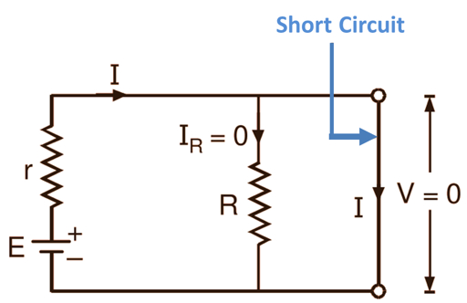
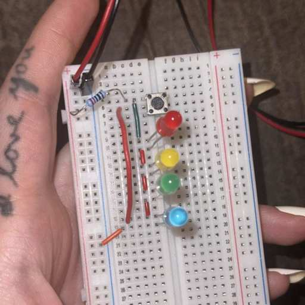
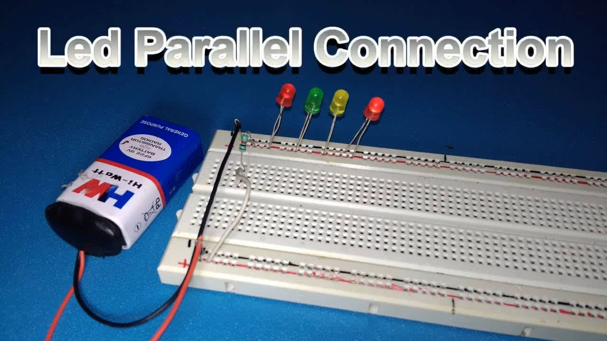

Day 2
Series vs. Parallel
Yesterday we built a single loop. Today, we learn how to branch out.
- Series: One path, shared current.
- Parallel: Multiple paths, shared voltage.
- Nodes: The "intersections" where paths meet.
Pro Tip: If one bulb goes out in series, they all go out. If one goes out in parallel, the rest stay on!
Component Limits
DANGER: Exceeding Current (Amps) creates HEAT.
Every component has a "wattage" or "current" limit. Push too hard, and it fries.
Protecting the Gear:
- Short circuits bypass the load and cause rapid overheating.
- Smell something funny? Disconnect the battery immediately.
- Check battery voltage before and after long labs.

The Danger of a Short Circuit
The Chain: Series
Rt = R1 + R2 + ...
Cumulative Resistance:
- Adding resistors in series increases total resistance.
- Current remains the same through all components.
Example: Two 470Ω resistors in a line = 940Ω total.
The Branches: Parallel
In parallel, each branch gets the full voltage of the source.
Independent Paths:
Voltage: Stays constant across all branches.
Current: Splits between the available paths.
The Trade-off: More branches in parallel actually decreases total resistance (more paths for electrons!).
Think of it like adding more lanes to a highway.
Talking Point: Why is your house wired in parallel? (Hint: Do your lights die when the toaster is unplugged?)
Switches & Control
AND vs. OR Logic:
- AND (Series): Both switch A AND switch B must be closed for the light to turn on.
- OR (Parallel): Either switch A OR switch B can be closed to complete the circuit.
This is the foundation of computer logic!
Button Basics:
- Momentary: Only "ON" while pressed.
- Toggle: Stays "ON" until flipped back.
Lab 2: Branching Out
OBJECTIVE: Build and compare two LED configurations.
- Setup A: Four LEDs in series with one resistor.
- Setup B: Four LEDs in parallel, each with their own resistor.
Observations:
- Which setup is dimmer? Why?
- Pull one LED out—what happens to the other?


Notice how both LEDs connect to the Power Rail!
Wrap Up
Day 2 Recap
- Series: Components in a single file line. High resistance, low current.
- Parallel: Components side-by-side. Shared voltage, independent paths.
- Total Resistance: Increases in series; decreases in parallel.
- The "Magic Smoke": Respect component limits to keep the hardware alive.
- Logic: We used hardware to create simple "AND/OR" decisions.
Tomorrow: Capacitors & Timing—Making circuits that can "remember" or blink on their own.